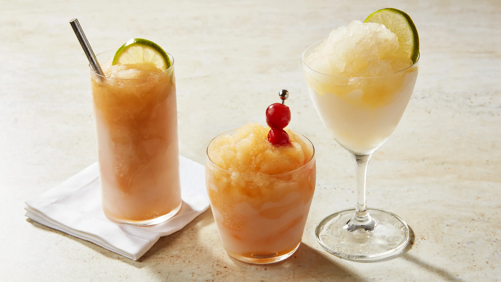

Any Flavor Vodka Cocktail!

Delicious cocktails with various garnishes.
Ingredients
- 2 oz flavorless vodka
- 4 oz drink of choice
- 2 cups of ice cubes
- Optional: A slice of preferred fruit for garnish
Steps
- Pour the vodka, ice, and drink of choice into a blender. If looking to make more drinks, follow the rule of 2 parts drink, 1 part alcohol.
- Blend until drink is pureed. Top off with garnish if preferred.
- Enjoy!